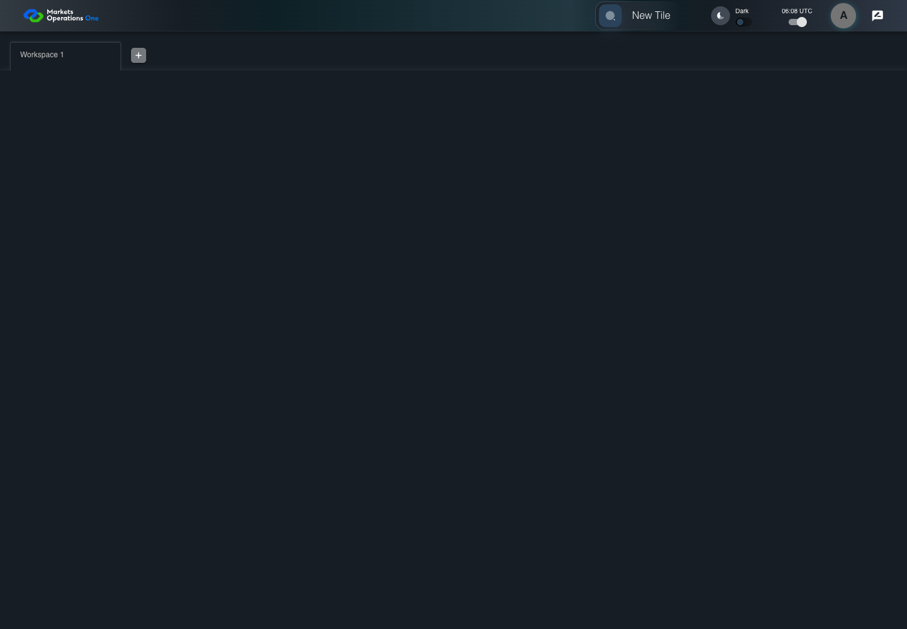
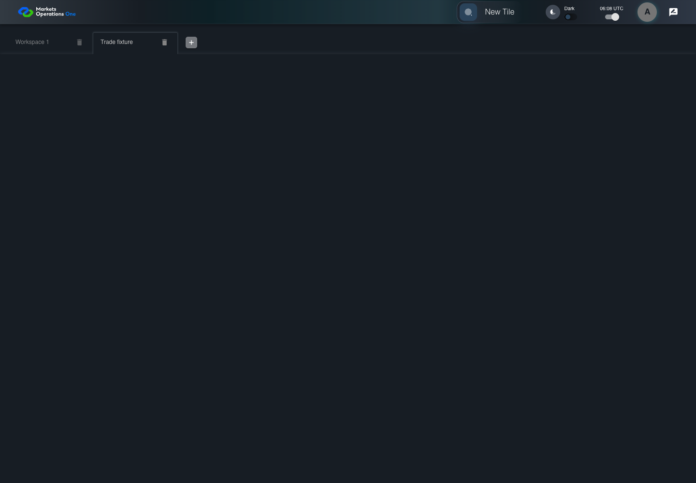

UI-MFE-013 actual Home FDC3 handler with declared intent delivery
PASS · application/run-050/ui-mfe-013-actual-home-fdc3-handler-with-declared-intent-delivery-f93639bed3a1-attempt-1 · ACTUAL_APPLICATION_LOCAL_SERVICES
Actual React shell/provider/dispatcher, error boundary, and Home FDC3 hook. Controlled login, catalog, container and intent delivery. URL cases explicitly mount inspected useParameters source through declared base import adapters. No real OpenFin desktop or protected business tenant acceptance.
2026-10-22T06:08:34.362Z to 2026-10-22T06:08:39.508Z
Assertions and result · Artifact manifest · Exact run inputs and source hashes
Result SHA-256:f5df237417822c19835385e40b26a7bfcaff28696b1ece0d4be6b4c417a6b359Machine observations
- declared-fdc3-runtime.json
222db77a3fba507f0d405f2399a5d0248eb11ecceb369c95e07f6d4f5e549065 - fdc3-deliveries.json
39573a9a03f65b67839b8133c69e8b5ad6de17606bfe5b66f16e9037eea23270
Screenshot capture: CAPTURED. Named frames: 6.
Step screenshot bindings: COMPLETE. 5/5 canonical steps have execution screenshots.
Bindings measure structural coverage only. They do not establish screenshot content quality or relevance.
Screenshot content review: NOT_REVIEWED. Recorded context: 0/6 frames. Identical image bytes: 3 repeated frames. Recorded context does not establish human visual review.
Canonical step timeline
Given User A is authenticated as fixture UI-USER-01 with the case-specific permissions
Execution: PASSED.
1. step-01 Visible state after step 1: Given User A is authenticated as fixture UI-USER-01 with the case-specific permissions
2026-10-22T06:08:36.670Z · 1440×1000
Step: /Users/lushevol/code/github/ratan-release-impact/workbench/tasks/ui-test-coverage-20261022/test-cases.md:7272
SHA-256:61c99a43f222cdd15bd17481528ac95df808f05362cbd4fadf132b9c3caf87b2And FDC3 is enabled and an entitled /trade fixture tile exists
Execution: PASSED.
2. step-02 Visible state after step 2: And FDC3 is enabled and an entitled /trade fixture tile exists
2026-10-22T06:08:36.758Z · 1440×1000
Step: /Users/lushevol/code/github/ratan-release-impact/workbench/tasks/ui-test-coverage-20261022/test-cases.md:7273
SHA-256:61c99a43f222cdd15bd17481528ac95df808f05362cbd4fadf132b9c3caf87b2Image bytes match frame 1. An unchanged image can be valid for consecutive assertions. This match does not establish correct step content.
When the declared FDC3 fixture delivers intent "scb.ViewLaunch" with context "type" "scb.fmptp.trade.query" and tradeId "TR-001"
Execution: PASSED.
3. step-03 Visible state after step 3: When the declared FDC3 fixture delivers intent "scb.ViewLaunch" with context "type" "scb.fmptp.trade.query" and tradeId "TR-001"
2026-10-22T06:08:36.867Z · 1440×1000
Step: /Users/lushevol/code/github/ratan-release-impact/workbench/tasks/ui-test-coverage-20261022/test-cases.md:7274
SHA-256:c5c9e44444d5525d90f042e86801dc836e891a0339dad67dee4d4689ac5a0712Then the controlled trade container displays intent "ViewTradeDetails"
Execution: PASSED.4. step-04 Visible state after step 4: Then the controlled trade container displays intent "ViewTradeDetails"
2026-10-22T06:08:37.822Z · 1440×1000
Step: /Users/lushevol/code/github/ratan-release-impact/workbench/tasks/ui-test-coverage-20261022/test-cases.md:7275
SHA-256:f68863e12f247197f44adfaa3222f0134e9b42255a0bbef6d3885d33104d6823And the same controlled trade container displays tradeId "TR-001"
Execution: PASSED.
5. step-05 Visible state after step 5: And the same controlled trade container displays tradeId "TR-001"
2026-10-22T06:08:38.088Z · 1440×1000
Step: /Users/lushevol/code/github/ratan-release-impact/workbench/tasks/ui-test-coverage-20261022/test-cases.md:7276
SHA-256:f68863e12f247197f44adfaa3222f0134e9b42255a0bbef6d3885d33104d6823Image bytes match frame 4. An unchanged image can be valid for consecutive assertions. This match does not establish correct step content.
Additional named frames

The final visible state after the named test assertions.
2026-10-22T06:08:38.337Z · 1440×1000Step: Test source: /Users/lushevol/code/github/ratan-release-impact/workbench/e2e/audit-specs/conditional-module-launch.spec.ts:71
SHA-256:
f68863e12f247197f44adfaa3222f0134e9b42255a0bbef6d3885d33104d6823Image bytes match frame 5. An unchanged image can be valid for consecutive assertions. This match does not establish correct step content.
Screenshots establish visible state only. Assertions and traces support functional claims.